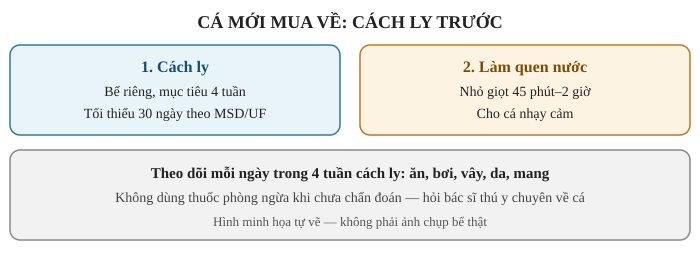

Cá mới mua về: cách ly, làm quen nước, theo dõi 2 tuần đầu
Tác giả: Ruler
Cá mới mua về là lúc bể cá của bạn gặp rủi ro lớn nhất. Không phải vì cá mới yếu hơn cá cũ, mà vì bạn chưa biết con cá đó mang theo những gì. Một con cá trông khỏe mạnh trong túi vẫn có thể mang theo ký sinh trùng hoặc vi khuẩn chưa lộ dấu hiệu, và chỉ cần một con như vậy thả thẳng vào bể chính, cả đàn cá cũ của bạn có thể gặp vấn đề trong vòng vài tuần sau đó. Bài 3 đã viết cá mua về đã yếu hoặc đã mang bệnh là một trong sáu nguyên nhân cá neon chết hàng loạt, nhưng Bài 3 chỉ nêu nguyên nhân. Bài này viết đầy đủ quy trình phòng ngừa: chuẩn bị bể cách ly, đưa cá về nhà, làm quen nước từng bước, theo dõi trong thời gian cách ly, và chuyển cá sang bể chính khi nào.
Bài này không chẩn đoán bệnh cho một con cá cụ thể và không kê thuốc, không ghi liều thuốc. Khi cá có dấu hiệu lạ, bài này chỉ giúp bạn ghi lại dấu hiệu, đo nước và hỏi bác sĩ thú y chuyên về cá hoặc cửa hàng thủy sinh có kinh nghiệm. Checklist chẩn đoán nhanh khi cá đã có dấu hiệu lạ nằm ở Bài 11; bài này nói về những việc làm trước khi cá có dấu hiệu lạ.
Vì sao cá mới là lúc bể dễ gặp rủi ro nhất
Cá trông khỏe không có nghĩa là cá sạch bệnh. Lone Star Rare Exotic Fish, trong bài tổng hợp về cách ly có dẫn Sổ tay Thú y MSD và tài liệu của Đại học Florida (UF/IFAS), viết rõ quan điểm của giới thú y: cá khỏe mạnh bề ngoài vẫn có thể là vật mang mầm bệnh mà không biểu hiện triệu chứng. UF giải thích vận chuyển và thay đổi môi trường làm suy giảm hệ miễn dịch của cá, vì vậy cá mới về có thể phát bệnh sau khi đã về nhà, dù ở cửa hàng nó vẫn bơi bình thường. UF viết bệnh đốm trắng thường lộ rõ trong một tới ba tuần sau khi vận chuyển ở nhiệt độ ấm mà nhiều loài cá cảnh cần. Khoảng thời gian đó chính là lý do việc cách ly tính bằng tuần, không tính bằng ngày: bệnh cần thời gian để lộ ra.
Một nghiên cứu mà Lone Star dẫn cho thấy kiểm tra bằng mắt thường không đủ để kết luận cá sạch bệnh. Các nhà nghiên cứu đã kiểm tra 1.020 con cá cảnh nhập khẩu vào Úc. Số cá này có giấy chứng nhận thú y ghi không có dấu hiệu bệnh và đã qua kiểm tra thị giác ở biên giới, nhưng các nhà nghiên cứu vẫn tìm thấy hơn 950 con sán lá thuộc 14 loài trên năm loài cá, kể cả trên cá vàng đã được xử lý sán lá trước khi xuất khẩu. Một khảo sát khác ở Ấn Độ trong các năm 2019–2022 cũng cho kết quả tương tự: dù Ấn Độ yêu cầu giấy chứng nhận tiền cách ly, xử lý cách ly và kiểm tra sau đó, các nhà nghiên cứu vẫn tìm thấy 26 loài sán lá trên 17 trong số 27 loài cá kiểm tra ở chợ cá cảnh. Bài này trích hai nghiên cứu đó không phải để làm bạn sợ mua cá, mà để giải thích vì sao cách ly là thói quen rẻ nhất để bảo vệ đàn cá cũ: một con cá có vấn đề trong bể cách ly chỉ là vấn đề của một bể nhỏ, còn cùng con cá đó trong bể chính là vấn đề của cả đàn.
Cách ly cũng không phải là bảo đảm tuyệt đối. Lone Star dẫn Sổ tay Thú y MSD: cách ly không có tác dụng với một số mầm bệnh như vi khuẩn lao cá (mycobacteria), nhiều loại virus, vi bào tử trùng và myxozoa. Sổ tay viết rõ điều đó không có nghĩa là không nên cách ly. Cách ly bắt được phần lớn các vấn đề thường gặp nhất — đốm trắng, sán lá, nấm velvet, vi khuẩn columnaris — và đó đã là phần lớn rủi ro mà người mới gặp phải.
Cách ly bao lâu: các nguồn không đưa một con số duy nhất

Đây là chỗ các nguồn uy tín không thống nhất với nhau, và bài này ghi rõ sự khác nhau đó thay vì chọn một con số rồi trình bày như mọi nguồn đều đồng ý.
AcuarioSano, trong hướng dẫn làm quen cá mới, viết cách ly nghĩa là giữ cá mới trong bể riêng từ 2 tới 4 tuần trước khi chuyển sang bể chính, và gọi đó là biện pháp bảo vệ tốt nhất trước bệnh đốm trắng và các bệnh khác đi theo cá mới mua.
Lone Star, sau khi đối chiếu các nguồn thú y, viết các nguồn thống nhất ở mức tối thiểu khoảng một tháng và khác nhau một chút ở mức dài hơn: Sổ tay Thú y MSD viết "thời gian 30 ngày là mức tối thiểu cho cách ly, nhưng có thể cần dài hơn"; tài liệu về bệnh đốm trắng của UF viết "khuyến nghị thời gian cách ly tối thiểu 30 ngày cho cá mới"; tài liệu về sán lá của UF viết "ít nhất bốn tuần"; còn Aquarium Science, một trang chuyên sâu về cá cảnh, viết "bốn tới tám tuần", và tác giả của trang đó giữ cá đặt qua thư trong bốn tuần, cá mua ở cửa hàng giảm giá trong sáu tuần.
Hai nhóm con số này không mâu thuẫn nhau nếu bạn hiểu đúng: 2–4 tuần là mức thực hành thường gặp trong các hướng dẫn cho người nuôi cá cảnh, còn 30 ngày (bốn tuần) là mức tối thiểu mà các nguồn thú y đưa ra. Bài này khuyên bạn lấy bốn tuần làm mục tiêu: nếu cá mua từ cửa hàng quen, cá khỏe và bạn theo dõi kỹ mỗi ngày, 2–4 tuần là khoảng thường dùng; nếu cá đắt, cá nhạy cảm như cá chuột panda hay cá chạch hề, cá mua qua vận chuyển xa, hoặc bể chính của bạn đang có cá quý, hãy giữ đủ 30 ngày. Một quy tắc nữa mà Aquarium Science đưa ra và Lone Star dẫn lại: nếu trong thời gian cách ly cá có vấn đề, hãy tính bốn tuần kể từ khi vấn đề được giải quyết xong, không tính từ ngày cá về nhà. Và đừng thêm cá mới vào giữa chừng: UF khuyến nghị cách ly theo nguyên tắc "vào cùng nhau, ra cùng nhau" — cá vào cùng một đợt thì ở cùng nhau và chuyển đi cùng nhau; nếu có thêm cá mới về trong lúc đợt đầu đang cách ly, hãy cho đợt mới bể cách ly riêng, vì cá mới có thể mang mầm bệnh mới lây cho đợt đầu.
Với người mới, bốn tuần nghe có vẻ dài, nhưng hãy so sánh với cái giá của việc không cách ly. Lone Star viết khi bể chính bùng phát đốm trắng, cần giữ cây và nền không có cá trong suốt vòng đời của ký sinh trùng ở nhiệt độ đó. Bốn tuần cách ly trong một bể nhỏ rẻ hơn rất nhiều so với việc xử lý cả bể chính và mất đàn cá cũ.
Chuẩn bị bể cách ly trước khi mua cá
Bể cách ly không cần đẹp, nhưng cần hoạt động được trước khi cá về tới nhà. Sổ tay Thú y MSD, qua Lone Star, mô tả một bể cách ly gia đình gồm "bể 10 gallon giá rẻ, lọc bọt biển, máy sục khí nhỏ và sưởi". AcuarioSano viết bể 10–15 gallon (40–60 lít) là đủ cho hầu hết cá nhỏ, kèm sưởi, lọc bọt biển đã có vi khuẩn, chỗ trốn và đáy trần để dễ vệ sinh. Với cá lớn hơn, hãy dùng bể lớn hơn theo kích thước cá. Đáy trần không phải để tiết kiệm tiền: UF khuyến nghị giữ hệ thống cách ly "rất đơn giản để cá dễ quan sát và bắt giữ, nước dễ thay và thuốc dễ dùng", và Aquarium Science cũng viết hầu hết mọi người chạy bể cách ly với đáy trần, không cây, không đồ trang trí.
Điểm quan trọng nhất là lọc phải có sẵn vi khuẩn. Một lọc mới hoàn toàn chưa có vi khuẩn có lợi, vì vậy bể cách ly mới có thể nhanh chóng tích amoniac và nitrit. Sổ tay Thú y MSD gợi ý chạy lọc bọt biển sạch trong bể chính đã ổn định, không bệnh, trước khi mua cá, "để cấy vi khuẩn nitrat hóa vào bọt biển". Aquarium Science đồng ý rằng bể cách ly "cần lọc đã chạy". Sổ tay Thú y MSD còn viết vi khuẩn trong lọc bể nhiệt đới có thể mất tới 8 tuần mới ổn định hoàn toàn, vì vậy đừng trông chờ vào một lọc mới chạy được vài ngày. Cách thực tế nhất cho người mới là luôn giữ một lọc bọt biển nhỏ chạy trong bể chính, để khi cần là có lọc đã có vi khuẩn để chuyển sang bể cách ly. Nếu amoniac hoặc nitrit vẫn tăng trong thời gian cách ly, Sổ tay Thú y MSD khuyên cho ăn ít lại và thay nước; nước thay vào phải xử lý clo và cloramin như nước bể thường. Mức an toàn cho amoniac và nitrit vẫn là 0 mg/L theo RSPCA, con số đã dùng thống nhất trong toàn bộ website này từ Bài 2.
Bể cách ly cần có đồ riêng, không dùng chung với bể chính. Sổ tay Thú y MSD viết cá cách ly nên có "dụng cụ riêng (vợt, xô, ống hút nước...)". UF giải thích nang của ký sinh trùng đốm trắng rất dính và lây lan giữa các hệ thống, vì vậy vợt và ống hút chưa khử trùng không nên dùng chung giữa các bể. Aquarium Science coi mọi dụng cụ cách ly đều đã nhiễm bẩn và cảnh báo ngay cả giọt nước nhỏ từ vợt cũng có thể mang theo ký sinh trùng. Hai thói quen nữa giúp giảm rủi ro lây chéo: làm việc với bể cách ly sau cùng trong ngày — Sổ tay Thú y MSD viết chỉ chạm vào cá cách ly "khi đã xong mọi việc với các con vật khác trong ngày" — và đặt bể cách ly xa bể chính một chút, vì UF lưu ý bệnh đốm trắng có thể lây qua sương nước, và tác giả của Aquarium Science giữ bể cách ly ở phòng riêng vì đá sủi có thể bắn mầm bệnh sang bể gần đó.
Nhiệt độ bể cách ly giữ ở mức bình thường của loài cá đó. Sổ tay Thú y MSD lưu ý nhiệt độ cao hơn hoặc thấp hơn môi trường tự nhiên của cá sẽ ức chế việc tạo kháng thể, một phần quan trọng của phản ứng miễn dịch. Nhiệt độ cũng ảnh hưởng tới tốc độ bệnh lộ ra: UF viết vòng đời của ký sinh trùng đốm trắng mất khoảng 3 tới 6 ngày ở 75 tới 79°F, và nước mát hơn làm vòng đời của ký sinh trùng chậm lại, vì vậy bệnh có thể lộ ra muộn hơn. AcuarioSano viết nhiệt độ thường dùng cho cá nhiệt đới là 75–80°F (24–27°C). Bài này không khuyên bạn tăng nhiệt độ bể cách ly để "ép" bệnh lộ ra nhanh hơn, vì thay đổi nhiệt độ cũng là một dạng stress với cá mới về.
Chọn cá ở cửa hàng và đưa cá về nhà
Cách ly bắt đầu từ lúc chọn cá, không phải từ lúc cá về tới nhà. AcuarioSano khuyên trước khi mua hãy nhìn kỹ bể ở cửa hàng: tránh bể có cá chết, đốm trắng, vây rách hoặc cá ngoi lên mặt nước thở gấp. Cá khỏe bơi năng động và có màu sắc rõ ràng. Nếu bể ở cửa hàng vừa nhận cá mới trong ngày và nhiều con đang lờ đờ, hãy quay lại vào tuần sau thay vì mua ngay.
Khi mua, hãy hỏi cửa hàng hai thông số nước của họ: pH và độ cứng. AcuarioSano viết hai con số này giúp bạn quyết định phương pháp làm quen bằng cách nổi túi là đủ hay nên làm quen nhỏ giọt chậm hơn. Nếu nước cửa hàng và nước nhà bạn khác nhau nhiều, cá cần thời gian làm quen dài hơn.
Trên đường về, hãy mua cá sau cùng rồi đi thẳng về nhà, đừng ghé thêm chỗ khác. AcuarioSano viết cá lý tưởng nhất không nên ở trong túi quá một tới hai giờ. Che túi khỏi ánh sáng và thay đổi nhiệt độ: túi tối màu hoặc thùng giữ nhiệt nhỏ đều dùng được trong cả mùa hè và mùa đông. Đừng bao giờ để túi cá dưới nắng hoặc trong xe nóng, vì nước trong túi nóng lên hoặc lạnh đi rất nhanh.
Làm quen nước: nổi túi cho cá khỏe, nhỏ giọt cho cá nhạy cảm
Làm quen nước có hai việc riêng biệt: cân bằng nhiệt độ và cân bằng hóa chất của nước. Nổi túi kín chỉ làm được việc thứ nhất. Hóa chất của nước — pH, độ cứng, độ mặn — chỉ cân bằng được khi nước bể và nước trong túi trộn vào nhau từ từ. Vì vậy nổi túi xong vẫn phải trộn nước, dù bạn chọn cách nào dưới đây.
Cách nổi túi: cho cá khỏe mua ở cửa hàng gần nhà
Cách này là cách chuẩn cho hầu hết cá khỏe: cá bảy màu, cá mún, cá neon, cá ngựa vằn và cá tam giác, theo AcuarioSano. Các bước như sau:
- Tắt đèn bể và làm tối phòng. Bóng tối làm cá mới bớt stress, và cũng làm cá cũ trong bể bớt chú ý tới cá mới.
- Nổi túi kín trên mặt nước 15–20 phút để nhiệt độ cân bằng. Đừng để túi dưới đèn, vì đèn có thể làm nước trong túi nóng lên.
- Mở túi và cuộn mép túi xuống để túi nổi như một vòng phao, hoặc đổ cá và nước trong túi vào một xô sạch chỉ dùng cho bể cá.
- Thêm nước bể vào túi từng ít một, khoảng một phần tư thể tích túi mỗi 5 phút, lặp lại ba tới bốn lần.
- Dùng vợt chuyển cá sang bể. Nước trong túi đổ xuống cống, không bao giờ đổ vào bể. AcuarioSano viết nước cửa hàng có thể mang theo ký sinh trùng, vi khuẩn, cặn thuốc và nhiều amoniac tích tụ trong chuyến đi.
- Giữ đèn tắt thêm vài giờ nữa và đừng cho ăn cho tới ngày hôm sau.
Một lỗi người mới hay mắc là nổi túi kín quá lâu. AcuarioSano viết nổi túi kín quá 20–30 phút không giúp gì thêm, vì amoniac tích tụ và oxy giảm dần trong túi kín. Nếu cá đã vận chuyển nhiều giờ trong thùng, hãy đưa cá ra khỏi túi sớm hơn sau khi đã cân bằng nhiệt độ, vì nước trong túi càng để lâu càng độc khi đã mở túi.
Cách nhỏ giọt: cho cá nhạy cảm, tôm, ốc và cá hoang dã
Cá nhạy cảm, tôm và ốc chịu thay đổi pH, độ cứng và tổng chất hòa tan rất kém, vì vậy cần làm quen chậm hơn nhiều. AcuarioSano viết cách nhỏ giọt làm việc này, và liệt kê cá chuột panda hay cá chạch hề là những loài nhạy cảm hơn vẻ ngoài, dễ mắc đốm trắng nhất khi về nhà trong tình trạng stress. Các bước như sau:
- Cân bằng nhiệt độ bằng cách nổi túi kín 15–20 phút như cách trên.
- Đổ cá và nước trong túi vào một xô sạch chỉ dùng cho bể cá, đặt thấp hơn bể.
- Luồn một đoạn ống dẫn khí từ bể xuống xô để tạo dòng xi phông, thắt nút lỏng hoặc dùng van để nước nhỏ 2–4 giọt mỗi giây.
- Để nước nhỏ cho tới khi thể tích nước trong xô tăng gấp đôi hoặc gấp ba, thường mất 45 phút tới 2 giờ. Với lần nhỏ giọt dài, một viên đá sủi nhỏ giúp nước có đủ oxy.
- Dùng vợt chuyển cá sang bể và đổ bỏ nước trong xô.
Bảng dưới đây tóm tắt thời gian theo loài, đúng như AcuarioSano ghi. Thời gian này tính từ lúc bắt đầu làm quen, không tính thời gian vận chuyển.
| Cá | Cách làm quen | Thời gian khoảng |
|---|---|---|
| Cá bảy màu, cá mún, cá molly, cá ngựa vằn | Nổi túi rồi trộn nước | 30–40 phút |
| Cá neon, cá tam giác, cá anh đào | Nổi túi (nhỏ giọt nếu nước khác nhau nhiều) | 30–45 phút |
| Cá chuột, cá chạch, cá pleco | Nhỏ giọt nhẹ | 45–90 phút |
| Tôm và ốc | Nhỏ giọt chậm | 1–2 giờ |
| Cá đĩa, cá cichlid lùn, cá hoang dã | Nhỏ giọt và cách ly | 1–2 giờ |
Bài 2 đã viết cách ngâm túi cá 30 phút theo RSPCA khi thả cá vào bể chính. Con số 30 phút đó là thời gian ngâm túi trong hướng dẫn của RSPCA, còn bảng trên là thời gian làm quen đầy đủ gồm cả trộn nước theo AcuarioSano. Hai con số không mâu thuẫn nhau vì chúng đo hai việc khác nhau: ngâm túi chỉ cân bằng nhiệt độ, còn làm quen đầy đủ còn cân bằng cả hóa chất của nước.
Theo dõi trong thời gian cách ly: nhật ký mỗi ngày
Aquarium Science, qua Lone Star, gợi ý để cá mới nghỉ trong phòng yên tĩnh, tối trong một tới hai ngày đầu, rồi sau đó quan sát mỗi ngày. Việc cá mới trốn, mất màu hoặc bỏ ăn trong 24–48 giờ đầu là bình thường. AcuarioSano viết cá mới trốn, mất màu hoặc bỏ ăn trong 24–48 giờ đầu là bình thường; hãy cho ăn ít từ ngày thứ hai và vớt thức ăn thừa. Nếu cá vẫn bỏ ăn sau vài ngày, đó mới là dấu hiệu cần ghi lại và theo dõi kỹ hơn, như Bài 11 đã viết về cá bỏ ăn kéo dài.
Hãy ghi nhật ký mỗi ngày vào cùng một thời điểm, tốt nhất là lúc cho ăn. Lone Star viết hãy ghi ngày cá về, kết quả đo nước, việc cho ăn và bất cứ điều gì bất thường. Sổ tay Thú y MSD liệt kê những thông tin bác sĩ thú y sẽ hỏi khi bạn cần tư vấn: có bao nhiêu cá bị ảnh hưởng, vấn đề kéo dài bao lâu, thể tích bể, số lượng và kích thước cá, cá mới thêm vào, quy trình cách ly của bạn và thuốc đã dùng trước đó. Một dòng mỗi ngày là đủ: ngày, giờ, cá ăn hết trong bao lâu, con nào không ăn, con nào bơi khác thường, số đo amoniac và nitrit.
Các dấu hiệu cần ghi lại trong thời gian cách ly, theo AcuarioSano và Lone Star:
- Đốm trắng trên thân hoặc vây, giống hạt muối rắc lên cá.
- Lớp bụi màu vàng nâu như bụi vàng, chỉ thấy rõ khi cá bị nặng, kèm theo cá cạ mình hoặc bỏ ăn.
- Vây cụp, vây rách hoặc vây có mảng như bông gòn.
- Cá thở nhanh, ngoi lên mặt nước hoặc bơi lờ đờ, tách đàn.
- Cá bỏ ăn nhiều ngày hoặc phân trắng, dạng sợi.
- Cá cạ mình vào đá, lũa hoặc nền.
Một dấu hiệu đơn lẻ chưa đủ để kết luận cá bị bệnh gì, như Bài 11 đã viết. Trong thời gian cách ly, nhiệm vụ của bạn không phải là đặt tên bệnh, mà là phát hiện sớm và giữ vấn đề ở lại trong bể cách ly. Khi có dấu hiệu lạ, hãy đo nước trước: amoniac và nitrit trên 0 mg/L cũng làm cá có dấu hiệu giống như bị bệnh, và xử lý nước sai nguyên nhân sẽ làm cá tệ hơn.
Trong thời gian cách ly cũng là lúc tốt để tập cho cá ăn thức ăn mà bạn sẽ cho ăn lâu dài. UF gợi ý quan sát việc cho ăn và hành vi mỗi ngày, rồi chuyển dần sang chế độ ăn dài hạn cho tới khi cá ăn ngon lành. Một con cá đã ăn thức ăn viên cũng dễ chữa hơn nếu sau này cần chữa, vì thuốc có thể trộn vào thức ăn khi cần, theo UF qua Lone Star. Bài này không hướng dẫn trộn thuốc vào thức ăn — đó là việc chỉ làm khi có hướng dẫn của bác sĩ thú y chuyên về cá.
Có nên dùng thuốc phòng ngừa trong thời gian cách ly không
Đây là chỗ các chuyên gia không đồng ý với nhau, và bài này ghi rõ sự khác nhau đó.
Sổ tay Thú y MSD, qua Lone Star, viết dùng thuốc phòng ngừa mà không có xét nghiệm chẩn đoán "bị khuyến cáo mạnh là không nên và có thể góp phần gây kháng thuốc", dù sổ tay cũng cho rằng một số lô hàng, nhất là cá biển mới nhập khẩu, có thể cần dùng thuốc phòng ngừa. Cách tiếp cận của UF là xác định ký sinh trùng trước rồi mới chữa đúng loại đó. Aquarium Science viết chỉ quan sát và chữa khi bệnh xuất hiện là cách "hiệu quả và hoàn toàn chấp nhận được".
Bài này không đứng về phía nào, vì đó là quyết định cần chuyên môn. Lời khuyên thực tế cho người mới là: đừng tự mua thuốc phòng ngừa cho cá đang khỏe mạnh trong bể cách ly. Thuốc không chỉ tác động lên ký sinh trùng mà còn có thể làm hại vi khuẩn trong lọc của bạn: Sổ tay Thú y MSD lưu ý tắm kháng sinh và đồng có thể làm hại vi khuẩn có lợi trong lọc, vì vậy cần đo amoniac và nitrit kỹ trong và sau khi dùng thuốc. Đồng trong nước ngọt có thể nguy hiểm nếu liều không tính cẩn thận, và đồng cực độc với động vật không xương sống và cây thủy sinh. Nếu cá có dấu hiệu bệnh trong thời gian cách ly, hãy hỏi bác sĩ thú y chuyên về cá trước khi mua thuốc, mang theo sổ nhật ký đo nước của bạn. Nếu không có bác sĩ thú y chuyên về cá gần nhà, hãy hỏi cửa hàng thủy sinh có kinh nghiệm hoặc hội cá cảnh địa phương để được giới thiệu.
Chuyển cá sang bể chính khi nào
Khi cá đã qua ít nhất bốn tuần không có vấn đề gì, hoặc bốn tuần kể từ khi vấn đề được giải quyết xong, cá đã sẵn sàng chuyển sang bể chính, theo Aquarium Science qua Lone Star. Tài liệu này cũng khuyến nghị bệnh đốm trắng phải vắng mặt bốn tuần trước khi chuyển cá. Đừng rút ngắn thời gian chỉ vì cá trông khỏe: bệnh đốm trắng lộ rõ trong một tới ba tuần sau khi vận chuyển, vì vậy cá trông khỏe ở tuần thứ hai vẫn có thể phát bệnh ở tuần thứ ba.
Ngày chuyển cá, hãy làm quen nước lại từ đầu như khi cá mới về: nổi túi hoặc nhỏ giọt theo loài, rồi dùng vợt sạch chuyển cá sang bể chính. Lone Star viết đừng dùng vợt đã chạm vào cá mới về để chuyển cá đã cách ly xong, và đừng đổ nước bể cách ly vào bể chính — hãy vớt cá bằng vợt rồi bỏ nước cách ly đi. Việc này khớp với quy tắc đã viết ở mục làm quen nước: nước trong túi hay trong bể cách ly luôn ở lại ngoài bể chính.
Sau khi chuyển cá, hãy quan sát cá cũ và cá mới trong vài ngày đầu. AcuarioSano viết cá cũ có thể bắt nạt cá mới; di chuyển một món đồ trang trí trong bể giúp phá vỡ lãnh thổ đã định sẵn của cá cũ. Đừng cho ăn ngay sau khi chuyển cá; hãy đợi tới hôm sau và cho ăn ít, như đã viết ở mục làm quen nước. Đo amoniac và nitrit trong tuần đầu sau khi thêm cá, nhất là khi bạn thêm nhiều cá cùng lúc, vì lọc cần vài ngày để thích nghi với lượng chất thải tăng thêm. Bài 2 đã viết quy tắc thêm cá dần dần: thêm một nhóm loài mỗi lần, chờ 2–3 tuần giữa các lần thêm, đo nước trước mỗi lần mua thêm.
Nếu cá ốm hoặc chết trong thời gian cách ly
Nếu cá có dấu hiệu bệnh trong thời gian cách ly, hãy hành động ngay trong ngày, đừng chờ hết thời gian cách ly. UF viết cá chỉ có một ký sinh trùng đốm trắng cũng nên được chữa ngay vì nó sinh sản rất nhanh, và một lần chữa là không đủ. Bài này không hướng dẫn cách chữa cụ thể, vì liều và loại thuốc phụ thuộc vào loài cá, nhiệt độ nước và loại ký sinh trùng — đó là việc của bác sĩ thú y chuyên về cá. Việc của bạn là tách cá có dấu hiệu lạ ra bể riêng nếu bạn đang cách ly chung nhiều cá, đo nước, ghi lại dấu hiệu và hỏi chuyên môn ngay.
Vớt cá chết ra ngay khi phát hiện. UF viết ký sinh trùng đốm trắng trưởng thành nhanh chóng rời khỏi cá sau khi cá chết và bắt đầu sinh sản trong nước. Trung tâm Kiểm soát và Phòng ngừa Dịch bệnh Hoa Kỳ (CDC), qua Lone Star, cũng khuyên vớt cá chết kịp thời để bệnh không lây lan. Đừng vứt cá chết vào bồn cầu hay ra ao hồ ngoài trời: hãy gói kín và bỏ vào thùng rác sinh hoạt theo quy định địa phương.
Một con cá chết vẫn có thể giúp bác sĩ thú y tìm ra nguyên nhân. Sổ tay Thú y MSD viết cá chết chưa tới 24 giờ và được giữ lạnh kịp thời ở 4°C (khoảng 39°F) vẫn có giá trị chẩn đoán. Cá đang sống có dấu hiệu bệnh còn tốt hơn: nó có thể mang đi trong túi cá chắc chắn với vừa đủ nước để phủ kín cá. Hãy mang theo mẫu nước bể ít nhất 500 mL trong túi hoặc chai, không có bọt khí, giữ trên đá. Hiệp hội Bác sĩ Thú y Cá Hoa Kỳ có bản đồ tìm bác sĩ thú y chuyên về cá ở Bắc Mỹ; ở Việt Nam, hãy hỏi cửa hàng thủy sinh lớn hoặc hội cá cảnh địa phương để được giới thiệu bác sĩ thú y có kinh nghiệm với cá cảnh.
Không có chỗ đặt bể cách ly thì làm gì
Không phải ai cũng có chỗ đặt thêm một bể nữa. AcuarioSano viết thẳng: nếu bạn không có chỗ đặt bể cách ly, ít nhất hãy mua cá ở cửa hàng bạn tin tưởng, quan sát cá cẩn thận và suy nghĩ kỹ trước khi thêm cá mới vào bể đang có cá quý. Đó là phương án dự phòng, không phải phương án thay thế: nó giảm rủi ro, không loại bỏ rủi ro.
Nếu bạn không có bể cách ly, hãy làm chặt ba việc còn lại: chọn cá kỹ ở cửa hàng (tránh bể có cá chết, đốm trắng, vây rách), làm quen nước đúng cách thay vì đổ cả túi vào bể, và theo dõi cá mới mỗi ngày trong hai tuần đầu sau khi thả vào bể chính. Nếu cá mới có dấu hiệu lạ trong hai tuần đó, hãy tách nó ra ngay — dù chỉ là một xô sạch có sưởi và lọc bọt biển tạm thời — rồi hỏi chuyên môn, đừng chờ xem cá cũ có bị lây không. Và đừng thêm cá mới vào bể chính khi bể đang có cá ốm, vì cá ốm sẵn đã yếu và dễ bị lây thêm.
Checklist cá mới mua về
Dùng checklist này mỗi lần mua cá mới, ghi lại kết quả vào sổ theo dõi bể.
- Trước khi mua: bể chính đã chạy lọc xong, amoniac và nitrit ở 0 mg/L; bể cách ly đã chuẩn bị sẵn với lọc bọt biển đã có vi khuẩn, sưởi và chỗ trốn.
- Ở cửa hàng: chọn bể không có cá chết, đốm trắng, vây rách; hỏi pH và độ cứng nước của cửa hàng; đừng mua cá vừa mới về cửa hàng trong ngày nếu nhiều con đang lờ đờ.
- Trên đường về: mua cá sau cùng, đi thẳng về nhà, cá không ở trong túi quá một tới hai giờ, che túi khỏi nắng và nóng.
- Làm quen nước: tắt đèn, nổi túi kín 15–20 phút; cá khỏe thì trộn nước bể vào túi từng ít một, cá nhạy cảm thì nhỏ giọt 2–4 giọt mỗi giây cho tới khi thể tích tăng gấp đôi hoặc gấp ba.
- Chuyển cá bằng vợt, đổ bỏ nước trong túi; giữ đèn tắt vài giờ, đừng cho ăn cho tới ngày hôm sau.
- Trong thời gian cách ly: ghi nhật ký mỗi ngày (ngày về, số đo nước, cá ăn thế nào, dấu hiệu lạ); đo amoniac và nitrit thường xuyên, nhất là tuần đầu.
- Thời gian cách ly: mục tiêu bốn tuần không có vấn đề, hoặc bốn tuần kể từ khi vấn đề được giải quyết xong; đừng thêm cá mới vào giữa chừng.
- Đừng tự dùng thuốc phòng ngừa cho cá đang khỏe; hỏi bác sĩ thú y chuyên về cá trước khi dùng bất kỳ thuốc nào.
- Ngày chuyển sang bể chính: làm quen nước lại từ đầu, dùng vợt sạch, không đổ nước bể cách ly vào bể chính; đo nước trong tuần đầu sau khi thêm cá.
- Nếu cá ốm hoặc chết trong thời gian cách ly: vớt cá chết ngay, đo nước, ghi lại dấu hiệu và hỏi chuyên môn trong ngày.
Kết luận
Cá mới mua về là lúc bể của bạn gặp rủi ro lớn nhất, và cách ly là cách rẻ nhất để giữ rủi ro đó ở lại trong một bể nhỏ. Quy trình này không có bước nào phức tạp: chuẩn bị bể cách ly với lọc đã có vi khuẩn trước khi mua cá, chọn cá kỹ ở cửa hàng, đưa cá về nhà nhanh và che túi khỏi nắng nóng, làm quen nước bằng cách nổi túi cho cá khỏe và nhỏ giọt cho cá nhạy cảm, rồi theo dõi cá mỗi ngày trong bốn tuần. Các nguồn không thống nhất về thời gian cách ly chính xác — 2–4 tuần theo hướng dẫn cho người nuôi cá cảnh, 30 ngày là mức tối thiểu theo Sổ tay Thú y MSD và Đại học Florida — vì vậy bài này khuyên bạn lấy bốn tuần làm mục tiêu, dài hơn với cá quý hoặc cá mua qua vận chuyển xa. Đừng tự dùng thuốc phòng ngừa cho cá đang khỏe, và đừng rút ngắn thời gian cách ly chỉ vì cá trông khỏe ở tuần thứ hai: bệnh đốm trắng có thể lộ ra trong một tới ba tuần sau khi vận chuyển. Khi cá đã qua bốn tuần không có vấn đề gì, hãy làm quen nước lại từ đầu rồi mới chuyển cá sang bể chính bằng vợt sạch.
Nguồn tham khảo
- AcuarioSano, "How to Acclimate Fish: Floating, Drip Method and Quarantine" — nổi túi kín 15–20 phút; thêm khoảng một phần tư thể tích túi mỗi 5 phút, ba tới bốn lần; nhỏ giọt 2–4 giọt mỗi giây, thể tích tăng gấp đôi hoặc gấp ba trong 45 phút tới 2 giờ; bảng thời gian theo loài; cách ly 2–4 tuần; bể cách ly 10–15 gallon (40–60 lít), lọc bọt biển đã có vi khuẩn, đáy trần; cá mới trốn hoặc bỏ ăn 24–48 giờ đầu là bình thường, cho ăn từ ngày thứ hai; nhiệt độ cá nhiệt đới 75–80°F (24–27°C); cá không nên ở trong túi quá một tới hai giờ (truy cập 23/11/2026): https://acuariosano.com/en/how-to-acclimate-fish/
- Lone Star Rare Exotic Fish, "How to Quarantine New Fish: Tank Setup, Timing and Tips" — dẫn Sổ tay Thú y MSD (cách ly "rất được khuyến nghị", tối thiểu 30 ngày, bể 10 gallon, lọc bọt biển cấy vi khuẩn, dụng cụ riêng, làm việc với bể cách ly sau cùng, không khuyến cáo dùng thuốc phòng ngừa khi chưa chẩn đoán) và tài liệu UF/IFAS (bệnh đốm trắng lộ rõ trong 1–3 tuần sau vận chuyển, cách ly tối thiểu 30 ngày, sán lá ít nhất bốn tuần, nguyên tắc "vào cùng nhau, ra cùng nhau", vòng đời đốm trắng 3–6 ngày ở 75–79°F); Aquarium Science 4–8 tuần; cá chết chưa tới 24 giờ giữ ở 4°C vẫn có giá trị chẩn đoán; mẫu nước ít nhất 500 mL (truy cập 23/11/2026): https://www.lonestarrareexoticfish.com/blogs/information/how-to-quarantine-new-fish
- RSPCA, "Choosing an Aquarium for Pet Fish" — amoniac và nitrit an toàn ở 0 mg/L; không rửa vật liệu lọc dưới vòi; ngâm túi cá 30 phút khi thả cá vào bể (đã mở trực tiếp trong các bài trước của website này, Bài 2 và Bài 10) (truy cập 23/11/2026): https://science.rspca.org.uk/en/web/rspca/adviceandwelfare/pets/fish/environment